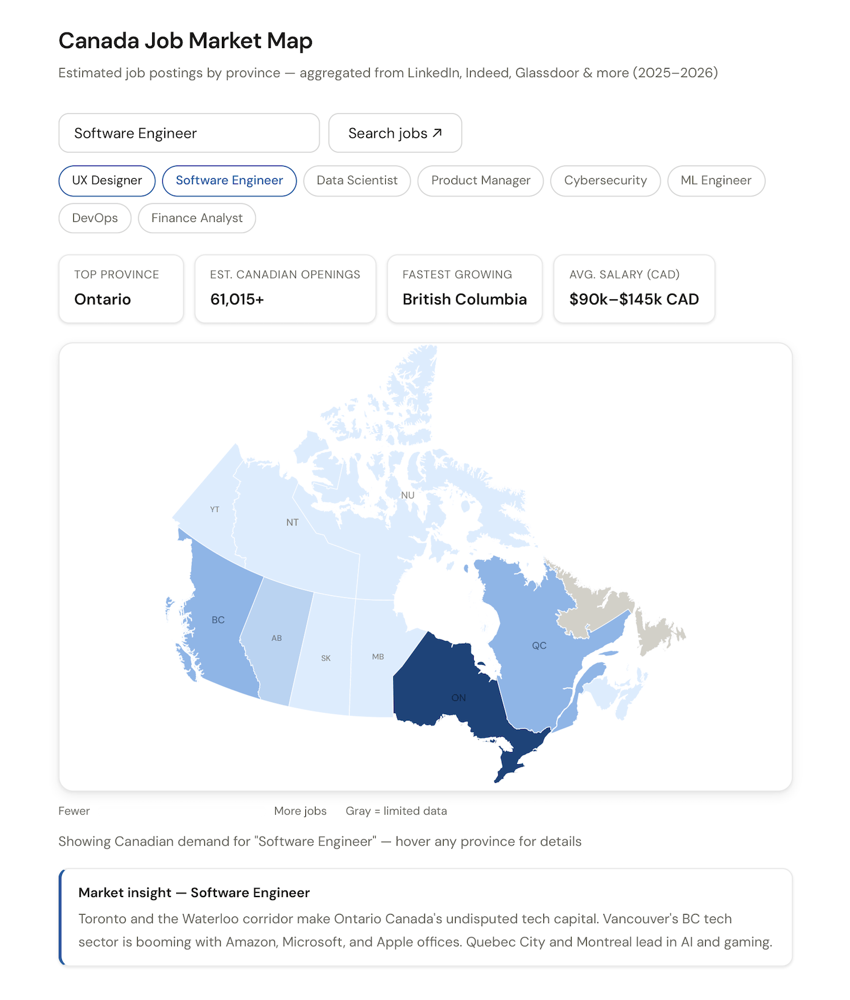

An interactive choropleth map that helps job seekers instantly see where hiring demand is strongest across Canada's provinces and territories, built solo from data model to D3 rendering.

Finding a job in Canada can feel overwhelming — especially when you don't know which cities or provinces are actually hiring for your role. When someone searches "UX Designer jobs in Canada" on Indeed or LinkedIn, they get a long list of postings they can filter by city, but there's no instant, spatial answer to the question that actually matters to them.
"Where in Canada should I even be looking for this kind of job?"
Job portals show postings, not patterns. Someone open to relocating, or working remotely and wanting to move to where their industry is concentrated, had no good tool for this — so I built one.
Type in any job title, and the map fills with colour — darker provinces have more openings. Hover over any province and you get the estimated count and demand intensity. It's a simple idea, but one that didn't exist in an easy-to-use, free, at-a-glance format. Four user groups shaped the design.
Deciding where to move or which province to target their job search in.
Exploring whether their new role is viable in their current city or region.
Scoping out Canada before applying for a work permit or relocation visa.
Choosing which province to base themselves in, factoring in industry density.
Working solo, the project moved through five stages, each one narrowing the scope until the map said exactly one thing clearly.
| Define | One question, one answer. The whole interface had to be built around speed of insight. |
| Format | Chose a choropleth map over a table or bar chart — geographic context was the whole point. |
| Data | Modelled estimated 2025–2026 posting volumes per province for 8 high-demand roles. |
| Build | D3.js and GeoJSON with a Lambert conformal projection tuned for Canadian geography. |
| Refine | Layered stat cards, tooltips, chips, and insight text to add depth without clutter. |
Getting an accurate Canada map rendered in D3 was the biggest hurdle. Canada's geography is notoriously tricky — the country spans 10 million km², with territories like Nunavut and Yukon taking up enormous area while holding very few jobs, and tiny provinces like PEI that are barely visible at a national scale.
Early attempts used rectangular bounding boxes per province, which looked cartoonishly wrong. The fix was fetching a real GeoJSON file with accurate provincial boundaries, then using d3.geoConicConformal with Canadian standard parallels at 49° and 77°N, rotated around 96°W — the same projection used by Statistics Canada.
"When visualising geographic data, the projection matters as much as the data itself. A bad projection makes correct data look wrong."
A secondary challenge was the sandbox environment restricting outbound API calls — the initial version tried to call an AI API for live data, which failed silently. The solution was moving data into a structured local module, which also made the tool faster and fully offline-capable.
The tool is fully downloadable as a self-contained project — no build step, no npm, no bundler. Open a local server and it runs. The code is cleanly separated into HTML, CSS, and four focused JS modules, making it easy to extend with new roles, new data, or a new country.
A self-contained, offline-capable interactive map.
The most valuable next step would be connecting to live job board APIs to replace estimated data with real-time posting counts, making the tool genuinely useful for active job seekers rather than illustrative. I'd also explore drilling down from province to city level — so a search for "UX Designer in Ontario" could show that Toronto accounts for roughly 85% of those roles, with a secondary cluster in Waterloo. A salary range slider is another natural addition.